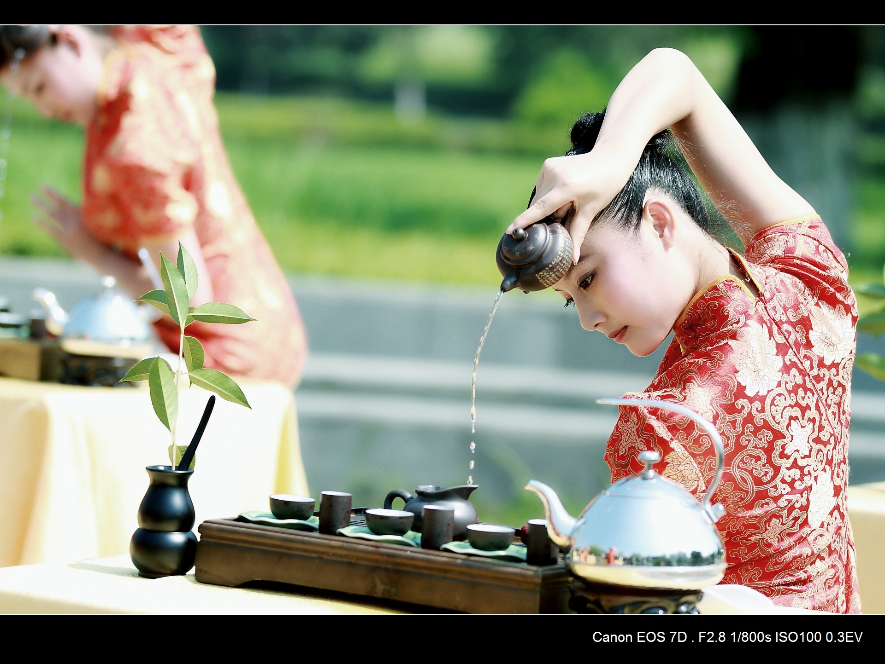
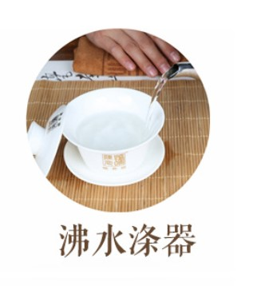
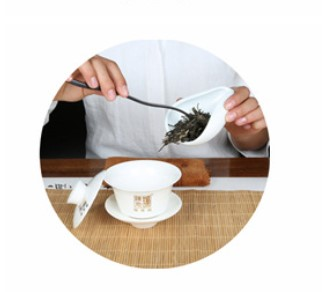
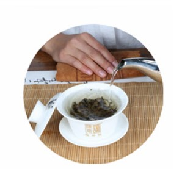
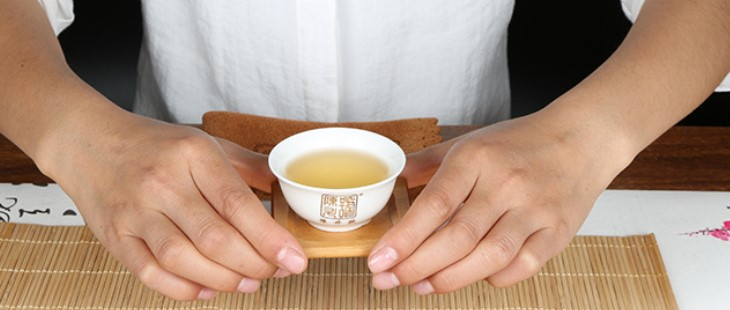

茶道艺术
茶道不仅是饮茶的艺术，更是修身养性的生活方式
茶道精神
中国茶道强调"和、敬、清、寂"的精神内涵，体现了儒家"中庸和谐"、道家"道法自然"、佛家"禅茶一味"的思想精髓。
茶道四谛
- 和 - 和谐、平和，体现人与人、人与自然的关系
- 敬 - 尊敬、恭敬，表达对茶、对人、对自然的敬畏
- 清 - 清洁、清净，追求环境的洁净与心灵的纯净
- 寂 - 寂静、空寂，达到物我两忘的精神境界
泡茶步骤
- 备具 - 准备茶具，清洁温杯
- 赏茶 - 欣赏干茶外形色泽
- 置茶 - 将茶叶放入茶壶
- 冲泡 - 注入适量温度的热水
- 奉茶 - 恭敬地将茶奉给客人
- 品茗 - 观色、闻香、品味

传统茶道表演，展现中华茶文化的优雅与精致
茶道演示

温杯烫盏

乌龙入宫

悬壶高冲
